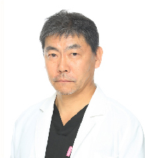
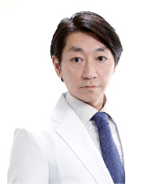
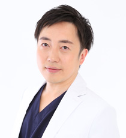
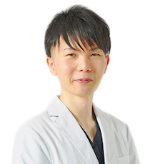

三尾 泰司
THE MEDICAL SALON. 院長
美容デザイナー®

- 国内最大手といわれる美容外科グループで20年以上院長を務めた美容外科専門医。その後、脂肪吸引専門クリニック「THE
CLINIC」大阪院院長に就任し、ボディーデザインを習得。手掛けた症例数は２０万件を超え、その圧倒的な経験値は業界トップクラスを誇る。
- 1984年 宮崎医科大学卒業
- 1984年 城南福祉医療協会大田病院
- 1990年 大手美容外科 入職
- 1991年 大手美容外科 池袋院院長 就任
- 2014年 大手美容外科 新宿アイランドタワー院院長 就任
- 2014年 脂肪吸引専門クリニック「THE CLINIC」 入職
- 2015年 THE CLINIC 大阪院院長 就任
- 2016年 THE MEDICAL SALON. 院長 就任
- ＜資格＞
- 美容外科専門医（JSAS）
- 日本美容外科学会会員
- VASER LIPO認定医
- コンデンスリッチファット（CRF）療法認定医
- サーマクール認定医
- アラガン ボトックス認定医
足立 安章
YAG BEAUTY CLINIC -OSAKA- 院長
美容デザイナー®

- 形成外科出身、美容外科歴12年の美容外科専門医。
手掛けた症例数は10万件を超え、圧倒的な経験値が裏付けるその卓越した技術に定評がある。 - 2000年 川崎医科大学 卒業
- 2002年 川崎医科大学形成外科
- 2004年 星ヶ丘厚生年金病院形成外科
- 2005年 大手美容クリニック 美容外科・美容皮膚科 院長歴任
- 2016年 医療法人社団 創輝会 入職
- 2016年 YAG BEAUTY CLINIC -OSAKA- 院長就任
- ＜所属＞
- 日本美容外科学会会員
- サーマクール認定医
- 美容外科専門医(JSAS)
- BOTOX VISTA®認定医
- 日本形成外科学会
川原 正行
PICO BEAUTY CLINIC 院長
美容デザイナー®
- 1998年 岡山大学医学部 卒業 広島中電病院 産婦人科 勤務
- 1999年 国立病院機構 福山医療センター 勤務
- 2003年 脳神経センター 大田記念病院 勤務
- 2005年 International SOS Beijing Clinic 勤務
- 2008年 Y's Therapeutics Inc. 勤務
- 2014年 品川美容外科 入職
- 2018年 PICO BEAUTY CLINIC 院長就任
安居 剛
北日本統括医師
YAG BEAUTY CLINIC（札幌）院長
美容デザイナー®

- 地元北海道で10数年にわたり、食道再建、乳房再建、眼瞼下垂、顔面外傷、熱傷、皮膚悪性腫瘍、先天性アザの治療などあらゆる疾患の治療に従事してきた、形成外科専門医。顔面神経麻痺の治療に関する研究で、医学博士号を取得。基礎となる知識、経験を身につけ、満を持して美容外科医として、この創輝会で新たなステージをスタートさせる。
- 2005年 札幌医科大学卒業。その後初期臨床研修を経て
- 2007年 北海道大学医学部形成外科入局
道内の関連病院で研鑽を積む - 2012年 北海道大学大学院医学研究科博士課程入学
- 2013年 日本形成外科学会専門医取得
- 2016年 同大学院卒業、学位取得
- 2016年 札幌斗南病院で形成外科医長として、乳房再建、眼瞼下垂、レーザー治療（シミ取り、タトゥー消しなど）を含めた美容医療部門を担当する。
- 2018年 4月 医療法人社団 創輝会 入職
- 2019年 3月 YAG BEAUTY CLINIC 札幌院院長就任
- ＜所属＞
- 日本形成外科学会
- 日本美容外科学会(JSAPS)
- 日本頭蓋顎顔面外科学会
- 日本レーザー医学会
- ＜資格＞
- 医学博士
- 形成外科専門医
安東 森太郎
医師/美容デザイナー®

- 2016年 長崎大学医学部医学科 卒業
- 2016年 社会医療法人大成会 福岡記念病院 勤務
- 2018年 大手美容クリニック 入職
- 2019年 医療法人社団創輝会 入職
- ＜所属＞
- 日本医師会認定産業医
- 日本美容外科学会(ＪＳＡＳ）
- ボトックスＶista®施術資格
森野 結紫
医師

- 1994年 高麗大学医学部 卒業
- 1994年 韓国報勲病院応急室（救急センター） 勤務
- 1997年 ソウル延世大学病院 形成外科レジデント 入職
- 1997年 Kilman 男性外科クリニック 入職
- 1999年 ソウル市内大手美容外科クリニック 入職
- 2001年 ロザン美容外科クリニック 開業
- 2010年 メンズヘルスクリニック東京（旧城西クリニック） 入職
- 2016年 西東京中央総合病院(循環器科、救急科、皮膚科、内科) 勤務
- 2017年 湘南美容クリニック 入職
- 2018年 東京上野クリニック 入職
- 2019年 医療法人社団創輝会 入職
- ＜所属＞
- 大韓民国老人(抗加齢)学会 正会員
- 大韓一次医療学会 正会員
- 大韓民国美容外科学会(KAAS) 正会員
- 日本美容外科学会(ＪＳＡＳ）
ご予約